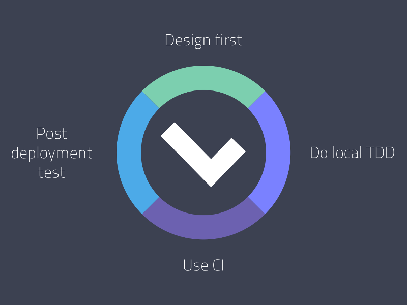

Automated Testing
Overview
An important part of the API life cycle is to make sure that what the contract says is what is actually implemented, and that’s the place for Automated Testing. Testing works by taking your API Description, creating expectations based on the requests and responses in the blueprint, making requests to your API, and seeing if the responses match. The goal is to have the documentation and implementation of the API in sync—no more outdated API documentation.
Topics

Expectations
There are some automatically-generated expectations on HTTP responses based on examples in the blueprint with the use of Gavel.js library. Please refer to Gavel rules if you want to know more.
Headers Expectations
- All headers given in example must be present in the response
- Only values of headers significant for content negotiation are validated
- All other headers values may differ
Body Expectations
- All JSON keys on any level given in the example must be present in the response JSON
- All JSON values may differ
- Response JSON values must be of the same JSON primitive type
- Arrays may have additional items, type or structure is not validated
- Plain text must match perfectly
- If JSON Schema v4 or JSON Schema v3 is given in the blueprint, JSON response must be valid against this schema and JSON example is ignored
Inspecting requests/responses
Investigating raw HTTP requests and responses or the expectations is quite laborious. Our Apiary reporter makes it easy. You can navigate through all the test runs, steps, each request/response or what is expected etc.
Local Development
First step to get up and running is to test during development using the Test Driven Development paradigm so the consistency of the documentation and implementation is kept all the time. Get started with local testing.
Continuous Integration
Continuous integration testing is the next logical step to ensure that the documentation in the repository is up to date. This is where the Apiary reporter comes in handy again as the continuous integration output is not always friendly.
Post deployment testing
To ensure that the API consumers are always presented with correct documentation, we offer post-deployment testing. It tests your production servers against the blueprint. This feature is a private beta—if you are interested let us know.